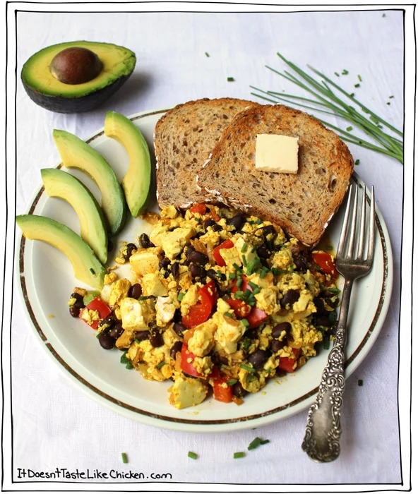

Tofu Scramble

Description
Colorful and spiced to perfection, this is my favorite hearty vegan recipe!
This is my go-to for breakfast when I'm hosting overnight guests. This
recipe is easy to customize and saves well in the fridge or freezer, so feel
free to prep in advance.
Ingredients
Scramble
- Silken Tofu - 1 block
- Button mushrooms - 1 cup, sliced
- Red bell pepper - diced
- Yellow onion - diced
- Garlic - 2 cloves, minced
- Black beans - 1 can, drained and rinsed
Spice Mix
- Nutritional yeast - 2 tbs
- Garlic powder - 1/4 tsp
- Kala Namak Black Salt optional - 1 tsp
- Chili powder - 1 tsp
- Cumin - 1 tsp, ground
- Turmeric - 3/4 tsp
Steps
- Add all of the spice mix ingredients into a small bowl and stir to combine.
- Heat a large skillet over medium-high heat and add the cooking oil. When
hot, add the mushrooms, pepper, onion, and garlic and sauté for about
10 minutes until everything starts to brown.
- Add the tofu blocks and break it apart with your spoon until you get the desired
scramble texture with lots of chunks. Stir in the spice mix and black beans.
Heat through for another 5 - 8 minutes until hot.
- Add salt and pepper to taste. Serve with toast or in a burrito.